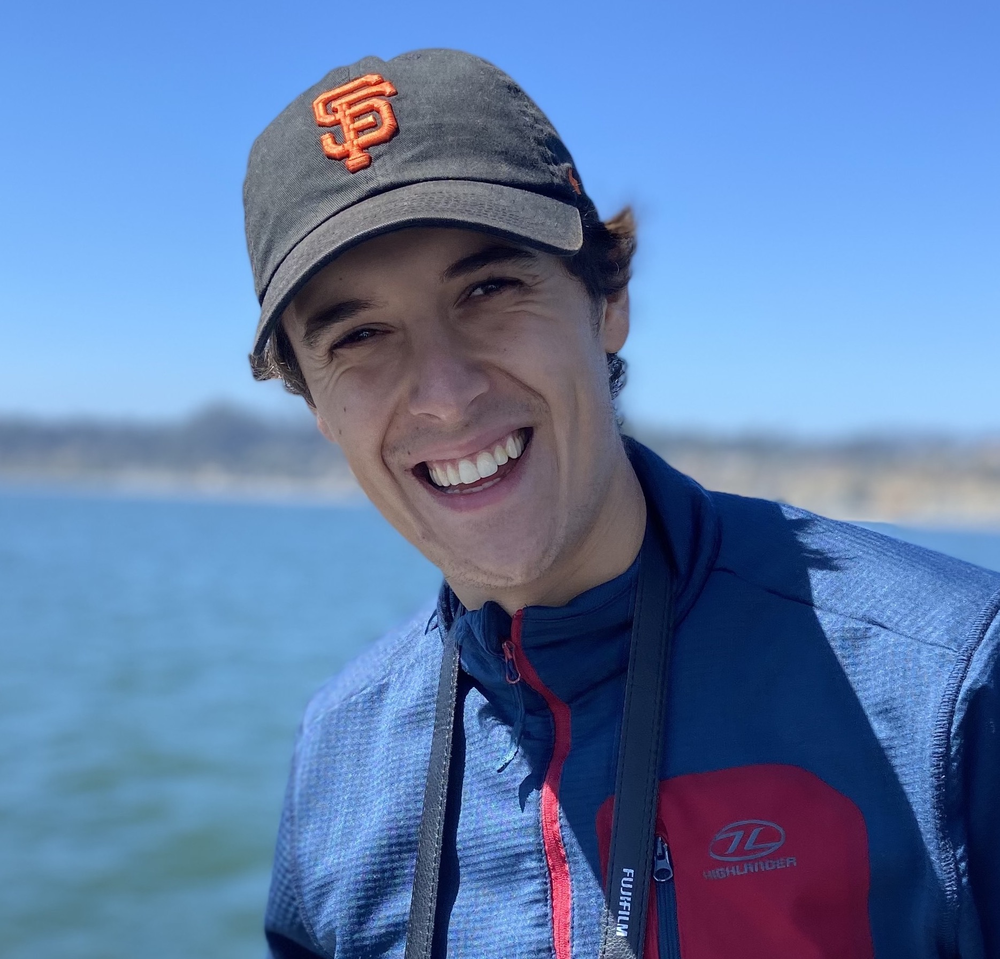

I am a second year Computer Science PhD student at Stanford University. I am very fortunate to be advised by Tatsunori Hashimoto and Tengyu Ma. I am supported by a Stanford Graduate Fellowship and a Future of Life Institute Vitalik Buterin Fellowship.
Previously, I completed a joint degree in Computer Science and Mathematics at Harvard University. During my undergraduate degree, I conducted research at the Harvard DtAK lab, advised by Weiwei Pan, Yaniv Yacoby, and Siddharth Swaroop. I also conducted research at the UC Berkeley Center for Human Compatible AI, advised by Scott Emmons.
I am interested in ensuring AI development goes well. I have worked on AI robustness and control [1,2,3], and more recently AI for science [4,5]. If you are interested in collaborating, please reach out.
Email: ljbailey [at] stanford [dot] edu
Google Scholar